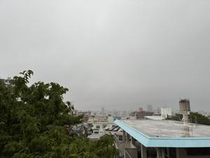
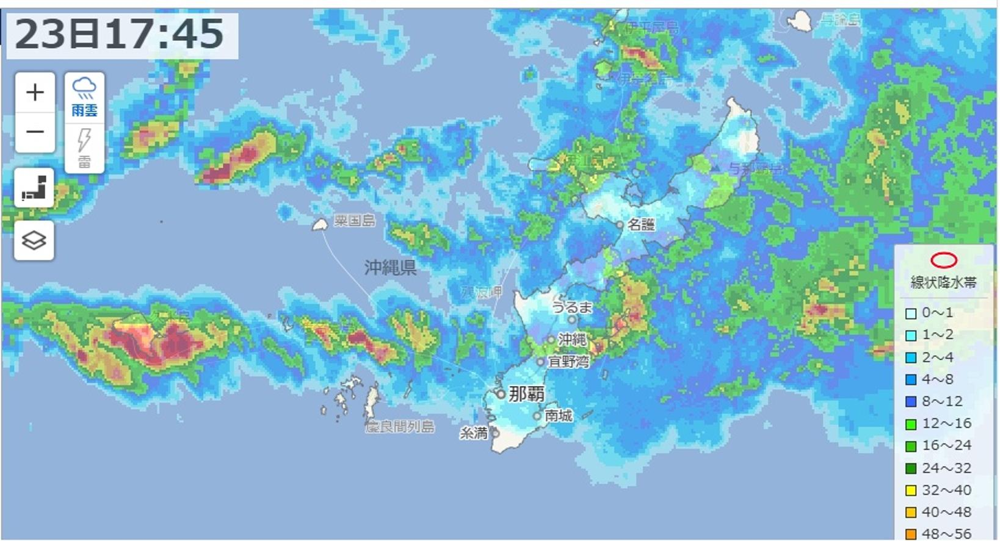
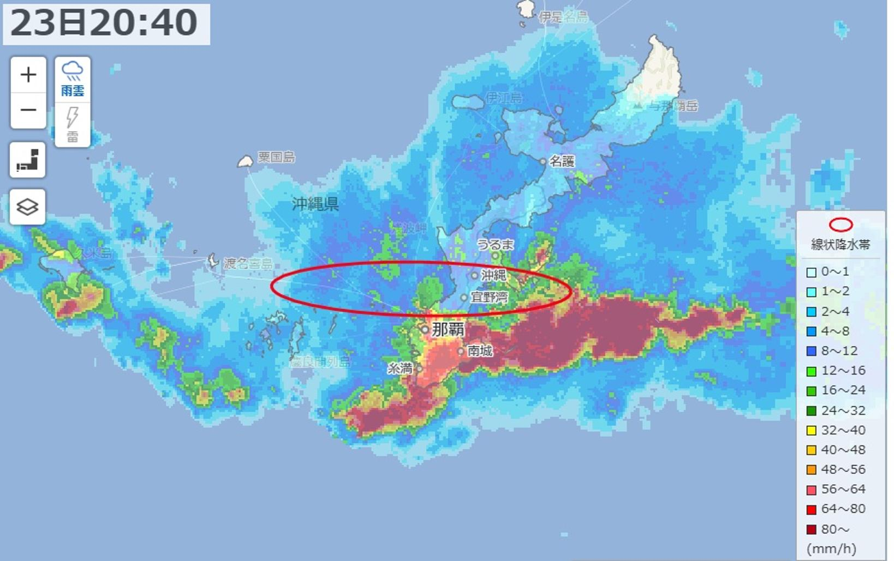

うるがいの話 ある日
最新: 扇風機アルヨ【うるがいの話 ある日】とは 一日だけのプログです
『うるがいの話』の最新一日だけのプログで、通信料が少なく経済的だ。カニの画像をクリックすると全ての日付が載る『うるがいの話』サイトを表示します
|
|
【うるがいの話】 うるがい(ｳﾙｶﾞｲ urugai)とは、『もずくがに』の名前でとても大きくなります。 |
|---|---|
|
|
【カミマヤーの話】 猫のことを方言でマヤーといいます。カミマヤー（kamimayaa）とは、神の猫のことです。 |
|
【たながぁの音楽】 たながぁ（ﾀﾅｶﾞｰ tanagaa）とは手長えびのことで、何種類かあり大きいのは車 エビぐらいになります。 |

|
【ぶながぁの話】 ぶながぁ(ﾌﾞﾅｶﾞｰ bunagaa)とは、赤い髪の毛、赤い身体、そして身長は１ｍ２０ｃｍ ぐらい、川の蟹を食べているの目撃された。場所は沖縄県国頭郡大宜味村のと ある村僕の隣近所に住んでいる爺さんから、聞いた話です。 |
|
|
【ギーマの話】 ギーマ(giima)とは、山原の里山に咲くスズランに似た、 花を付けます。実は食べられます、 気が付くと口の周りが紫になっています。 |
2026年05月24日 (日）扇風機アルヨ
15:09

『扇風機アルヨ』と答える。節約志向のコドモが扇風機欲しいと
言ってきた。ただ、イマイチの扇風機なので・・・・。
古い扇風機 回転するのに時間がかかるようになった
改善するには
どうすれば
いいですか
回転する機械の箇所に
油をさせば
いいと思いますが
ミシン油が最適
電源を抜く（必須）
羽根・前カバーを取り外す
モーター後部または軸の給油口（小さな穴）を探す
油を 2〜3滴だけ たらす
手で軸を回して油をなじませる
組み立てて動作確認
で、この前、土の搬入が遅れた時間で、古い扇風機にエアイの回
答を参考に、ミシン油をさした。で、直後は快適に動いたのでコ
レを上げる予定だった。
コドモに、少しサビがある扇風機と、ミシン油をさした古い扇風
機を前に、好きなほうをと、ミシン油をさした古い扇風機の電源
を入れた、最初は弱だとダメなので強に・・・、エ！、回らない
始めてだ。自ずと、もう一台をコドモに譲る。その後、回らない
扇風機、なんと回るのよ。マ、こんなもんか。
１７時４５分の雨雲レーダー、あと２時間ずれていたら外に出れ
たのに！。恨めしい

２０時４０分の雨雲レーダー、線状降水帯が発生しスピーカーで
警報をアナウンスしていた。ここまでとは、想定していなかった
天気だった。
